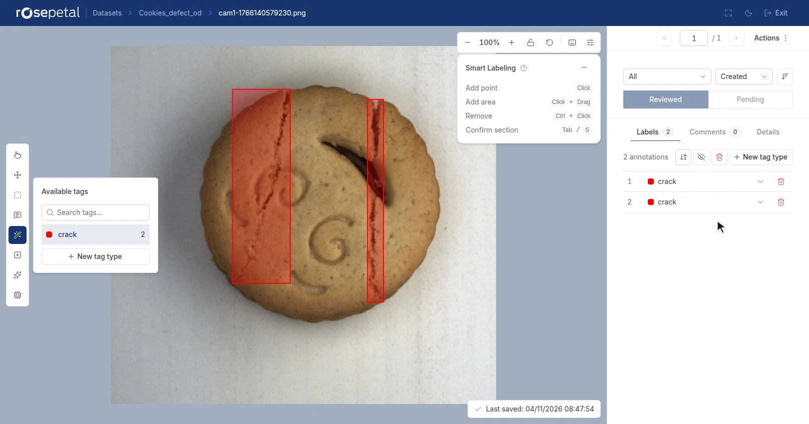

Visión artificial con IA para el control de calidad de galletas
Soluciones para líneas de producción de alta cadencia.
Engineering peace of mind
Especialistas en visión artificial con IA
Soluciones llave en mano para la industria alimentaria: electromecánica, bandas, electrónica, expulsión y software propio Rosepetal. Diseño y fabricación propios: integramos hardware, software e IA.
Experiencia contrastada: sistemas operando en plantas de producción de varios grupos europeos líderes del sector galletero.
Experiencia contrastada: sistemas operando en plantas de producción de varios grupos europeos líderes del sector galletero.
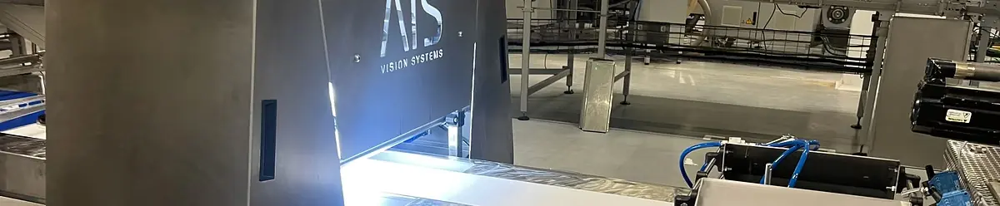
2
Identificamos los 4 puntos críticos de control a lo largo de la línea de galleta sándwich
Los puntos de inspección de AIS Vision Systems están ubicados estratégicamente para maximizar la detección temprana y minimizar el desperdicio aguas abajo.
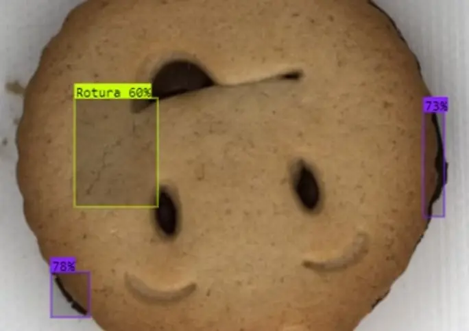
3
Puntos de control
1
Horno
Desarrollo, forma, decoración de glasa, color y quemado
2
Enfriado
Presencia de galleta, posición y glasa correcta
3
Baño de chocolate
Roturas, grietas, falta o defecto de relleno, chips y formas
4
Film transparente
Roturas, polvo, falta de producto y galleta invertida
4
Control post-horno: reducción de mermas desde el origen
Defectos eliminados antes de dosificar.
Rotura o grieta
Expulsión antes de crema: cero desperdicio de relleno
Descascarillado o pérdida de cobertura
Se elimina antes de dosificar para proteger calidad total
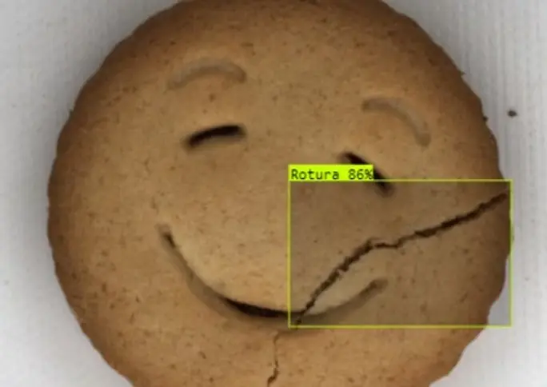
5
Control post-horno: manchas, dimensiones y color
Manchado superficial
Fuera de línea antes de crema y empaque, sin arrastre de merma
Dimensiones fuera de rango
Alta cadencia con rechazo temprano y flujo estable
Color incorrecto (cocción)
Control inmediato para asegurar consistencia y estándar
6
Rechazar las galletas defectuosas antes del dosificador de crema elimina el 100 % del desperdicio de crema en galletas KO
Y protege la eficiencia de la línea. Cada galleta KO detectada aquí evita el coste de crema, capper y envasado.
7
Control post‑capper: calidad total antes del envase
Hasta 1500 uds./min: inspección al 100 % sin reducir velocidad de línea.
Arquitectura
2 carriles con el sistema Rosepetal: máxima cadencia sin comprometer la calidad total del sándwich

8
Cámara cenital
Galleta rota o con grieta
Evita rechazo tardío, reclamaciones y merma de producto terminado
Desplazamiento de tapa (tolerancia: ±5 % del diámetro)
Evita devoluciones de cliente y pérdida de calidad total
Crema fuera del contorno
Evita desperdicio de crema y reprocesos en alta cadencia
Manchado o picado superficial
Evita incidencias de presentación y riesgo de no conformidad en envase
9
Cámara lateral
Ancho y altura de crema fuera de rango
Evita variabilidad de sándwich y pérdida de estándar
Falta de tapa inferior o superior
Evita producto incompleto, merma y bloqueo en empaque
Inclinación diagonal de tapa (defecto típico del capper)
Evita reclamaciones, retrabajos y afectación de calidad total
10
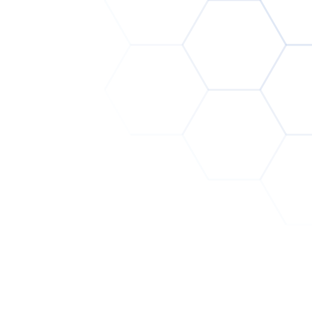
Control de paquete: calidad total en el producto final con el sistema AIS-RP-C
6
cámaras en color
Con cúpula de iluminación cerrada
100 %
inspección
Sin muestreo
180
paquetes/minuto, como máximo
Con trazabilidad completa de cada unidad
11
Defectos detectados
Diseñado para sostener la eficiencia en alta cadencia, reducir mermas y asegurar calidad total en el producto final.
Galleta rota visible
Evita reclamaciones y devoluciones de cliente final
Galleta invertida
Garantiza presentación perfecta en lineal
Polvo o fragmentos
Seguridad alimentaria y cumplimiento normativo
Marcaje de lote al 100 %
Trazabilidad total y cumplimiento legal
12
Inspección de glasa con IA
Lo que solo es posible con inteligencia artificial.
Resuelve
Diversos patrones en una misma producción, exceso de glasa, cobertura insuficiente, descascarillado (5 niveles de severidad, de OK a KO), grieta en cuerpo glaseado
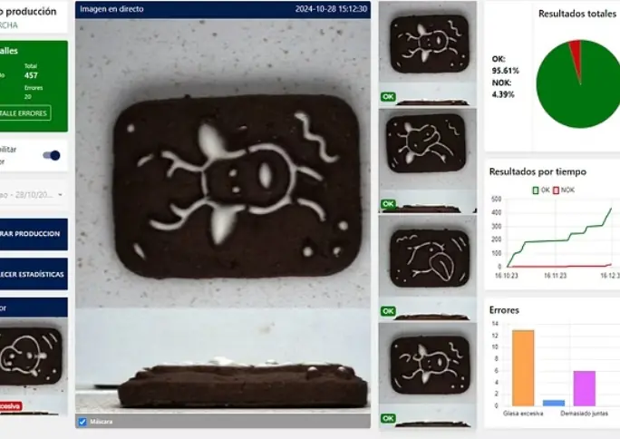
13
Con y sin inteligencia artificial
Sin IA
Cada patrón variable se detecta como defecto. Imposible en producción real.
Con Rosepetal
Distingue variación aceptable de defecto real. Entrenado por tipología.
14
Rosepetal: el cerebro del sistema
Deep learning
Modelos entrenados por tipología de defecto con cientos de imágenes reales
Recetas múltiples
Cambio de referencia en segundos. Formatos ilimitados almacenados.
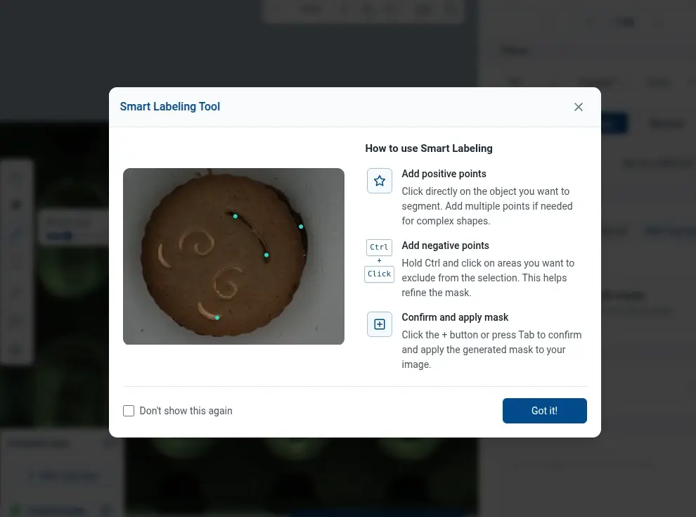
15
Estadísticas y acceso remoto
Estadísticas en tiempo real
Registro de cada NOK con imagen, fecha, tipo de defecto y umbrales configurables
Acceso remoto web
Supervisión y soporte remoto protegido, disponible 24/7
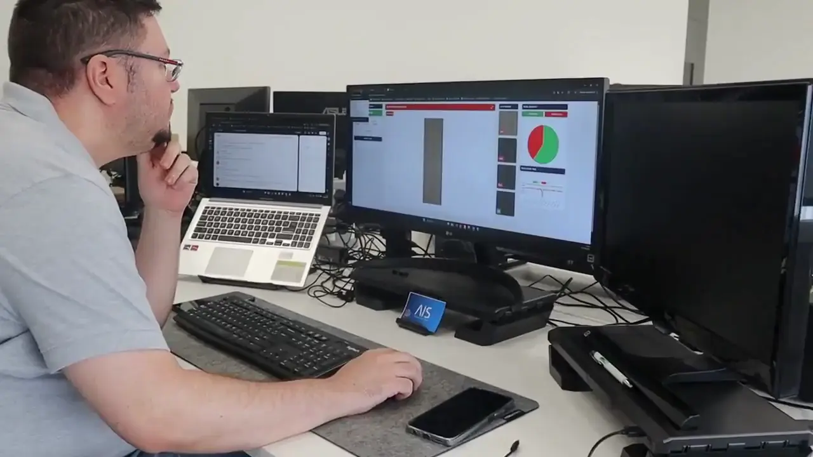
16
GlobalVision: control de artes gráficas
AIS Vision Systems es partner oficial de GlobalVision en España, el software líder mundial de inspección de artes gráficas, utilizado por el 72 % de las grandes compañías farmacéuticas y los principales fabricantes de gran consumo.
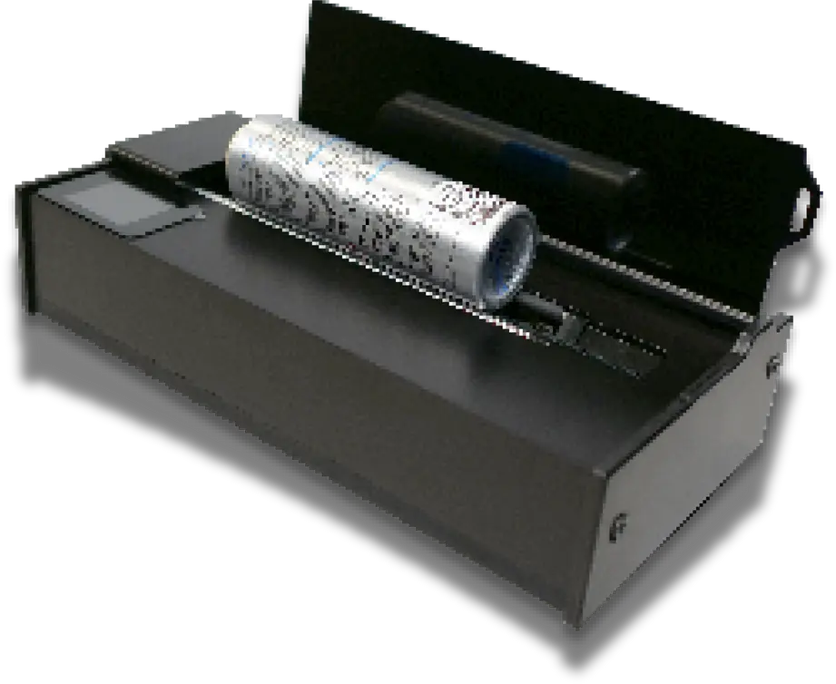
17
Verificación de artes de bobinas de film y estuches de cartón
Antes de aprobar la impresión y a la recepción de materiales de proveedor.
Evita reprocesamientos y retiradas de mercado por errores de packaging
Funciona offline, con escáner o entre archivos digitales, sobre cualquier material impreso
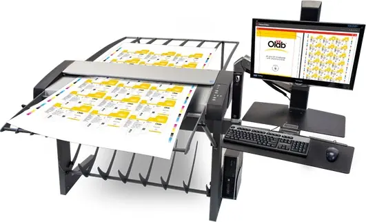
18
¿Qué detecta?
Gráficos e ilustraciones
Logos incorrectos, elementos desplazados, diferencias de registro
Texto
Palabras erróneas, fuentes incorrectas, texto faltante
Color
Desviaciones delta E: Pantone, CMYK, RGB, LAB
Códigos y Braille
Verificación ANSI/CEN/ISO y Braille en 44 idiomas
19
Encuentra diferencias automáticamente
Artwork vs. artwork
Artwork vs. muestra física
Muestra vs. muestra
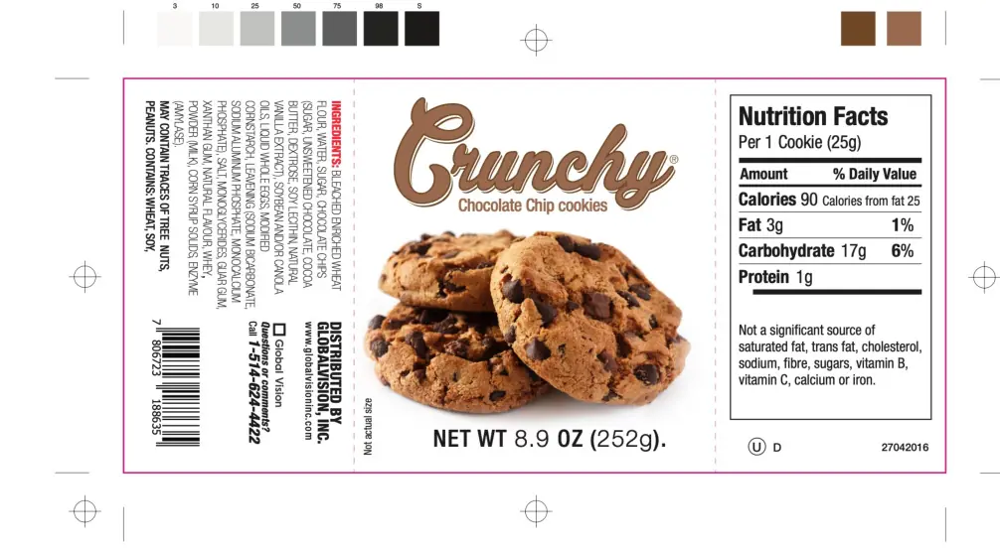
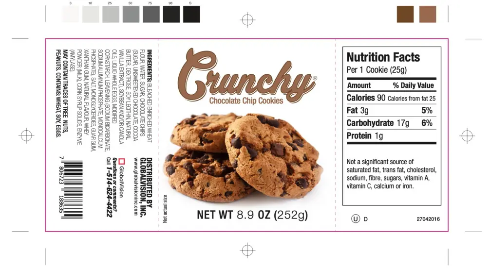
20
Solución llave en mano
Un solo proveedor. Cero integraciones. Responsabilidad total del proyecto. Marcado CE, diseño higiénico sin cavidades, inox 304.
Diseño electromecánico completo
Bandas de transporte
Cámaras, ópticas y electrónica
Software Rosepetal
21
Pruebas, formación y garantía
FAT en nuestras instalaciones
SAT e instalación en planta
Formación y soporte remoto
Garantía de 2 años
22
Experiencia en galletería industrial
1
Post-horno
Inspección en banda ancha, múltiples carriles
2
Post-capper
Alta cadencia: hasta 1500 uds./min, doble cámara
3
Múltiples referencias
En la misma línea (circulares y rectangulares)
4
Glasa
Patrones variables mediante IA
5
Paquete encelofanado
A 6 caras
6
FAT y SAT
Documentados y firmados
23
Panadería industrial: control geométrico inline de panes
Largo, ancho, deformaciones
Medición en tiempo real con la misma plataforma Rosepetal
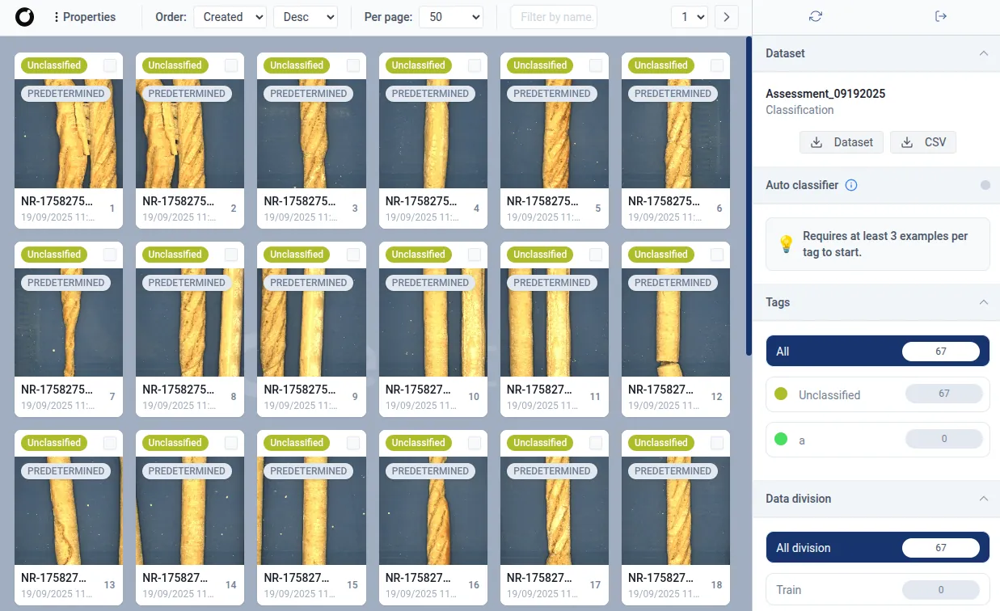
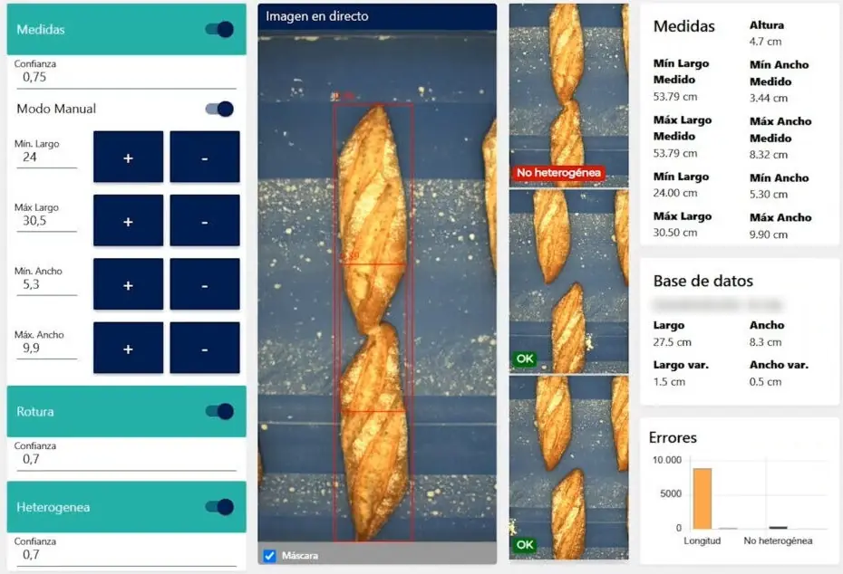
24
Próximos pasos
1
Visita técnica a planta
Toma de datos, muestras y layout de línea
2
Propuesta técnica y económica
Personalizada a tu línea y referencias
3
FAT en Barcelona
Validación completa en las instalaciones de AIS Vision Systems
4
SAT, puesta a punto y soporte continuo
De 2 a 3 semanas por referencia y ampliación de recetas
25

Gracias
Web
www.aisvision.com
Teléfono
+34 931 003 035
LinkedIn
AIS Vision Systems
YouTube
AIS Vision Systems